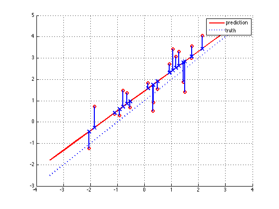

Residuals Demo
setSeed(2);
n = 20;
xTrainRaw = randn(n,1);
Ntrain = length(xTrainRaw);
xTrain = [ones(Ntrain,1) xTrainRaw(:)];
wtrue = [1 1];
sigma = 1;
yTrain = wtrue(1) + wtrue(2).*xTrainRaw + sigma*randn(Ntrain,1);
X = xTrain;
y = yTrain;
w = X\y
yPredTrain = xTrain*w;
xTestRaw = (-3.5:0.5:3.5)';
Ntest = length(xTestRaw);
xTest = [ones(Ntest,1) xTestRaw(:)];
yTestOpt = wtrue(1) + wtrue(2).*xTestRaw;
yPredTest = xTest*w;
figure
hold on
hh(1)=plot(xTestRaw, yPredTest, 'r-');set(hh(1), 'linewidth', 2)
hh(2)=plot(xTestRaw, yTestOpt, 'b:');set(hh(2), 'linewidth', 2);
h = plot(xTrainRaw, yTrain, 'ro');set(h, 'linewidth', 2)
grid on
h = plot(xTrainRaw, yPredTrain, 'bx', 'markersize', 10);set(h, 'linewidth', 2)
for i=1:Ntrain
h=line([xTrainRaw(i) xTrainRaw(i)], [yPredTrain(i) yTrain(i)]);
set(h, 'linewidth', 2, 'color', 'b')
end
legend(hh, 'prediction','truth')
printPmtkFigure('linRegResiduals')
restoreSeed;
w =
1.4530
0.9278
